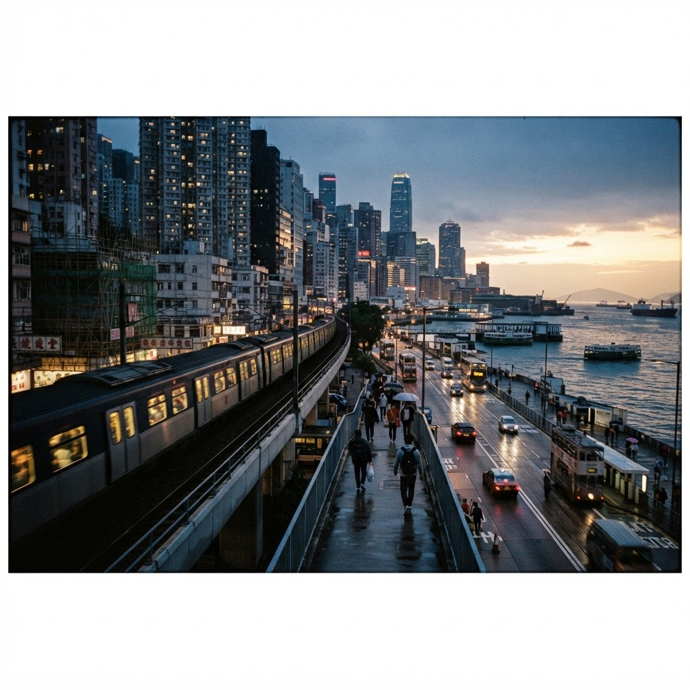
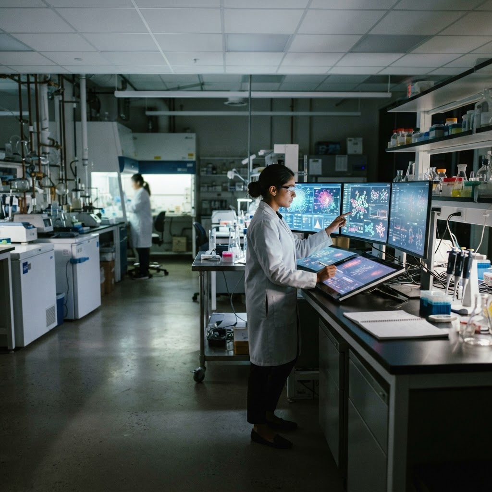
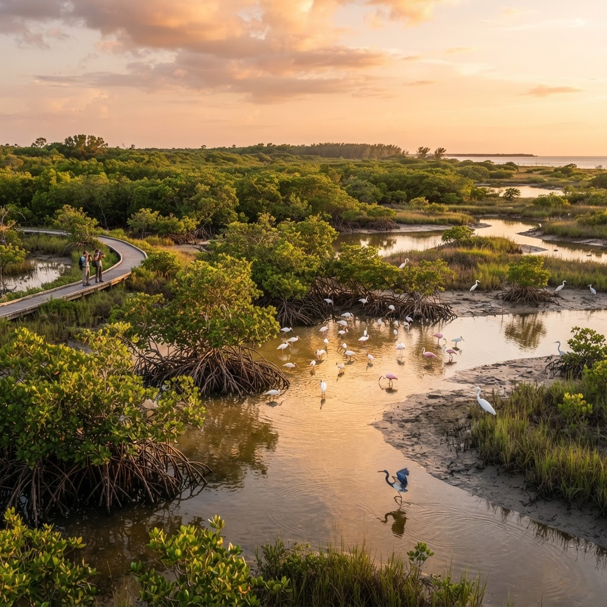

SCIENCE
Inside the quiet race to make clean power more dependable
Researchers are redesigning the humble grid for a more variable world.

From neighborhood energy exchanges to cross-border rail, a generation of practical ideas is changing how communities share a future.
Researchers are redesigning the humble grid for a more variable world.
Pragmatism, patience and a sharper focus on everyday services.
Communities are trading knowledge faster than ever — and asking new questions about who gets to shape the future.
A reported collection about the people building, questioning and living with the most consequential technology of our time.
Explore the report →
Builders are choosing shared infrastructure over closed ecosystems.
Better systems start with clearer signals and kinder design.
From tidal wetlands to urban forests, a closer look at patient work with a measurable impact.

By Nia Adeyemi
By Daniel Reyes
WorldPulse Editorial Board